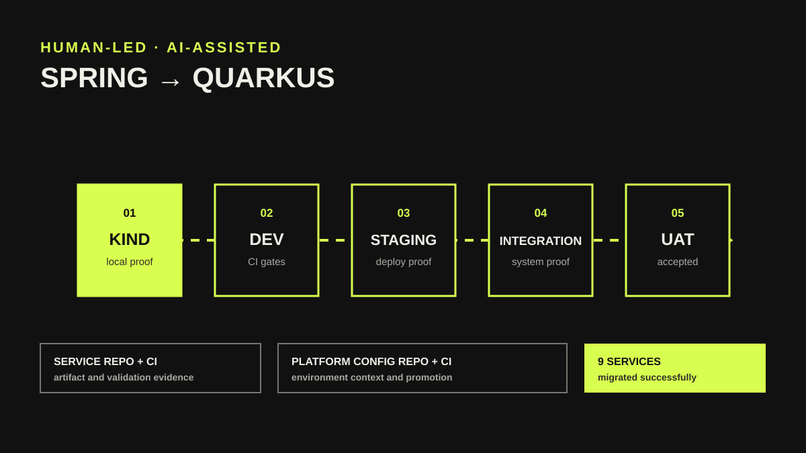

Platform engineering / Amadeus
Platform work I helped build and run.
Selected work across data exchange, cloud delivery, and developer automation. Choose a project to explore.

Data Exchange Platform / sanitized case study
Spring to Quarkus migration workflow
A developer-used, AI-assisted delivery workflow with validation gates, cross-repository handoffs, and human approval.